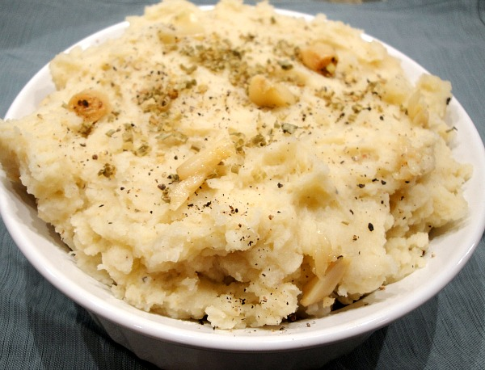
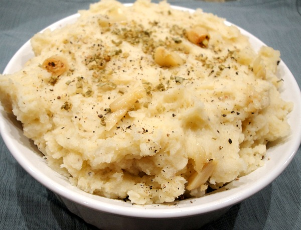

-
Garlic Roasted Mashed Potatoes
 

These simply prepared mashed potatoes are infused with roasted garlic,
adding an rich and earthy flavor to this Thanksgiving staple.
Ingredients
Makes 3 to 4 servings
- 1 head garlic
- Olive oil
- 2 pounds red potatoes, washed well and quartered
- Salt and freshly ground black pepper
- 5 tablespoons butter
- 3/4 cup heavy cream
Directions
- Preheat oven to 425 degrees F.
- Slice off the very top of the garlic head. Drizzle head with olive oil and wrap in foil. Place on a sheet tray and bake until tender and fragrant, roughly 35 minutes. Remove from the oven and let cool. Remove the cloves and mash with a wooden spoon.
- Place potatoes in a large stockpot and cover with cold water. Add salt and bring to a boil. Cook until fork tender and drain. Mash the potatoes until the desired consistency.
- Meanwhile heat butter and cream until butter melts. Add the roasted garlic and potatoes and mash all together.
- Taste and season with salt and pepper. Serve immediately.